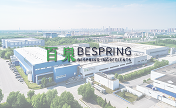

公司簡介
百泉化工有限公司
百泉化工有限公司（以下簡稱「百泉」）起源於1970年代，前身為邳州第二化工廠，是中國最早專注於食品級與工業級磷酸鹽生產與銷售的製造企業之一。
憑藉數十年的磷酸鹽專業經驗，百泉建立了堅實的技術基礎和品質管理體系。1980至1990年代，公司持續優化生產工藝，拓展產品應用，逐步形成涵蓋食品、飼料及工業用途的完整磷酸鹽產品組合。
進入21世紀後，百泉在保持國內市場領先地位的同時，積極拓展國際市場，產品出口至東南亞、中東及歐洲，獲得客戶廣泛認可。
2014年，公司完成重大重組，正式更名為百泉化工有限公司，轉型為集研發、生產與銷售於一體的現代有限責任公司。憑藉專業化管理與國際化視野，百泉已成為全球值得信賴的原料與添加劑供應商。
隨著國際業務發展，百泉不僅出口自有品牌的磷酸鹽產品，還整合合作夥伴的高品質資源，建立多元化且互利共贏的全球供應鏈網絡。經過數十年的成長，磷酸鹽仍是百泉的核心業務，同時公司透過持續穩定的品質、專業服務及良好聲譽，持續在全球添加劑與原料行業獲得認可與信任。